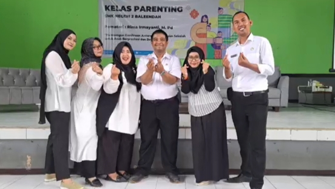

Pendampingan siswa dilakukan melalui tiga langkah sederhana dan terarah.
Siswa dapat menghubungi guru BK untuk menentukan topik, waktu, dan kebutuhan layanan.
Guru BK memberikan pendampingan aman, rahasia, dan sesuai kebutuhan siswa.
Guru BK memberikan rekomendasi, pemantauan, dan dukungan lanjutan.
Pilih jenis masalah yang ingin kamu konsultasikan
Pilih jenis layanan yang tersedia untuk mendukung perkembanganmu.
Membantu siswa menyelesaikan permasalahan pribadi secara rahasia dan nyaman.
Membantu siswa mengatasi kesulitan akademik, seperti manajemen waktu dan strategi belajar.
Membangun kepercayaan diri, kemandirian, dan kebiasaan positif dalam kehidupan sehari-hari.
Membantu siswa memahami minat bakat dan memilih jalur karier yang sesuai.
Memberikan dukungan dan penanganan untuk kasus perundungan di lingkungan sekolah.
Diskusi kelompok untuk menyelesaikan masalah sosial dan membangun komunikasi sehat.
BK selalu siap mendengarkan, mendukung, dan membantu kamu menemukan jalan terbaik. Kamu nggak sendirian.

BK bukan hanya tempat konsultasi. Kami adalah ruang aman untuk kamu bercerita, belajar memahami diri, dan menemukan jalan terbaik menghadapi berbagai masalah. Apapun yang sedang kamu hadapi, kamu tidak harus menghadapinya sendirian.